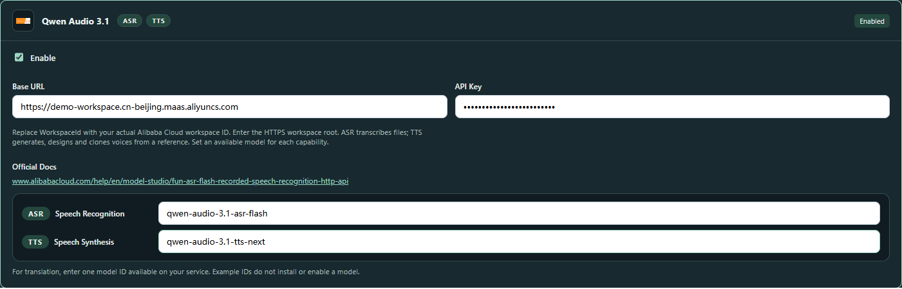
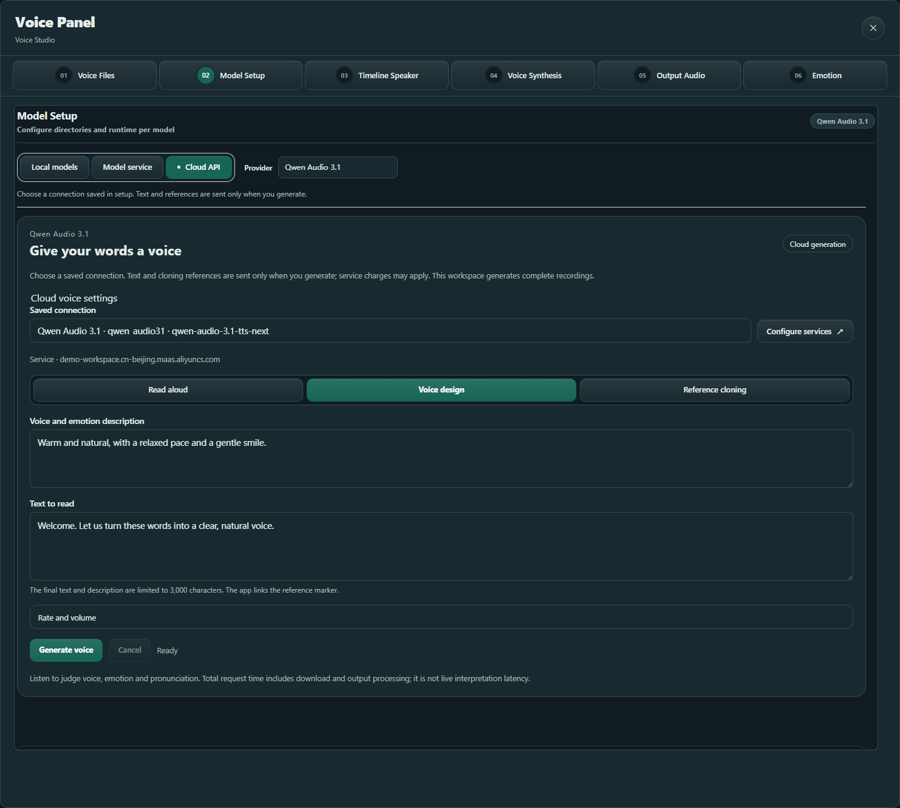
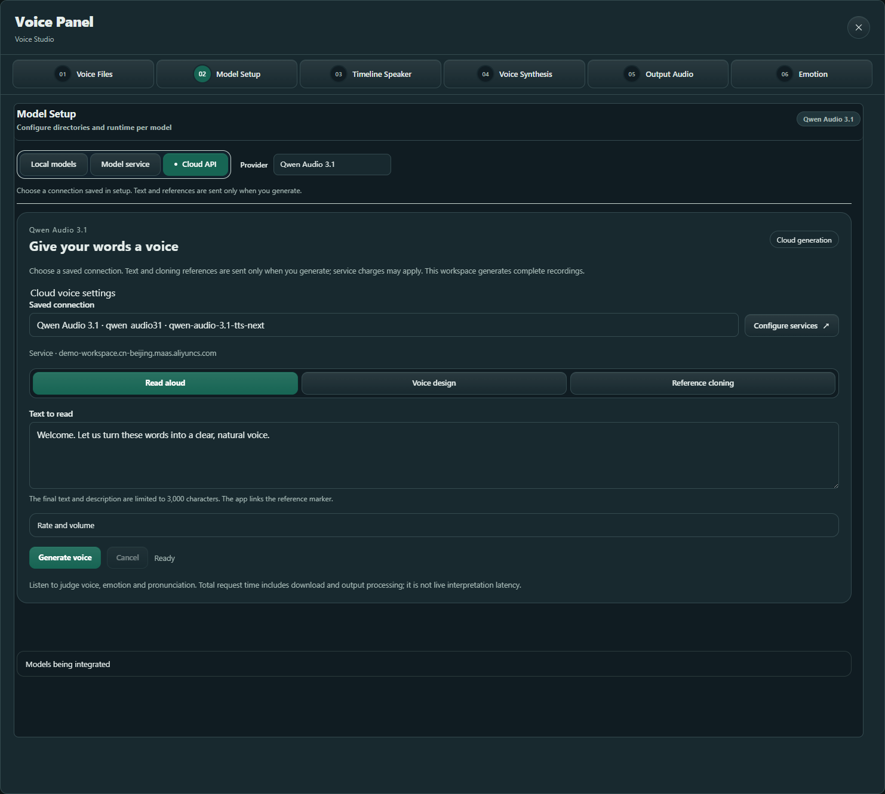
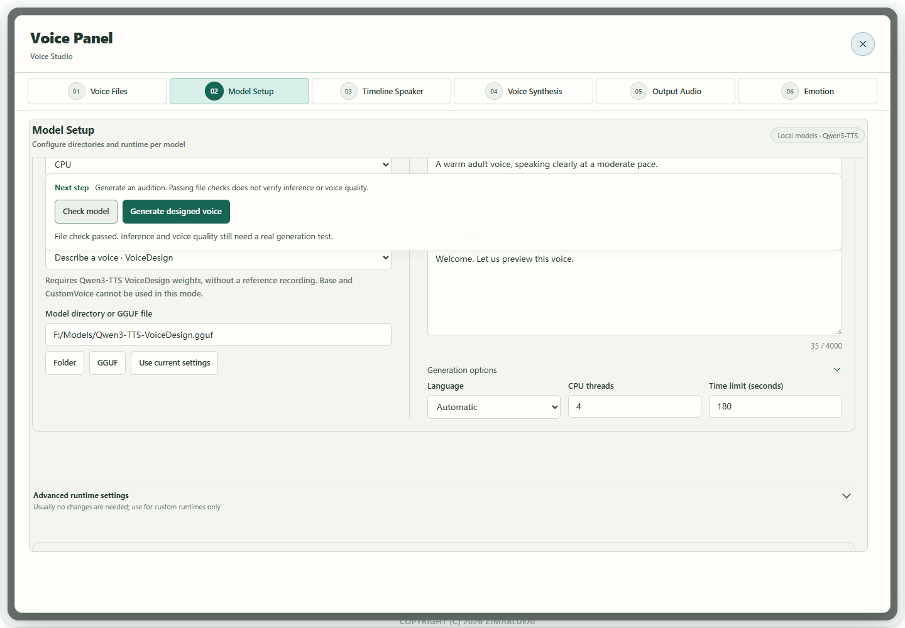
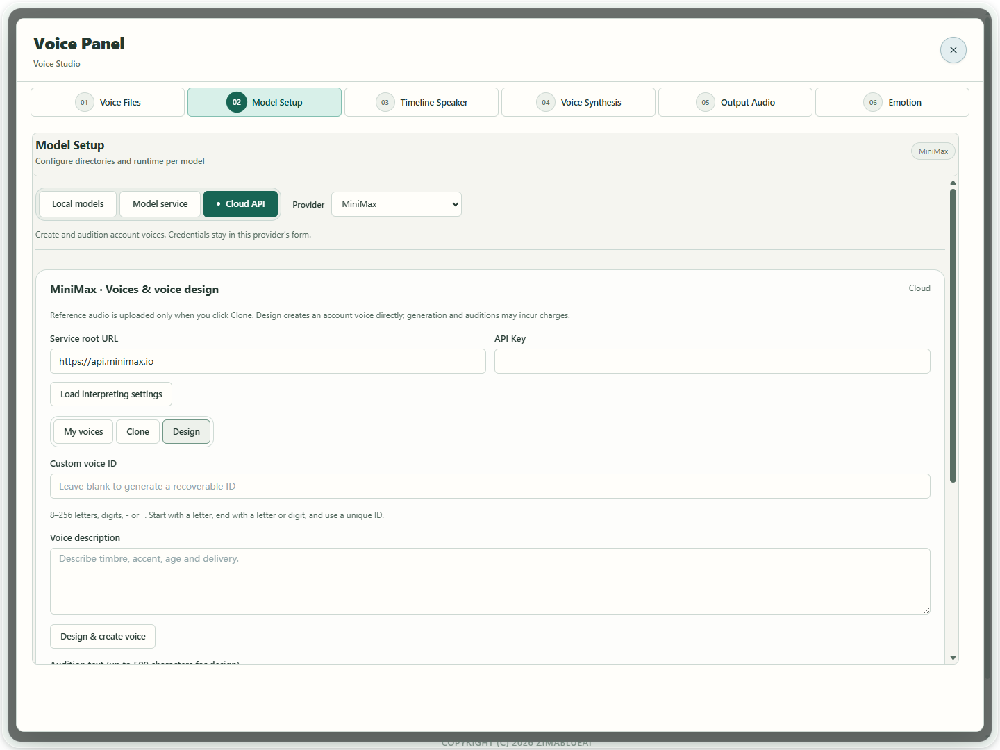

Scenario guide
Design a voice without a reference
Describe the voice you want for narration or announcements.
What you will get
Generate and audition a designed voice, then save its audio or add it to your library.
Before you start
- For local design, use a matching Qwen3-TTS VoiceDesign package. Base and CustomVoice do not replace VoiceDesign.
- Alternatively, configure a MiniMax cloud account with permission to create voices. Cloud and local forms are configured separately.
- A voice description and a short audition passage. This workflow does not need a reference recording.
Design and read with Qwen cloud audio
Qwen Audio 3.1 can generate a voice from a description without a reference recording or local voice model. Your account needs model access. Generate sends the text and description to the service, which may charge for the request. The result is a complete recording; listen to judge its voice and expression.
- 01
Save a usable cloud connection
Open the API services step in Setup Wizard, search for Qwen Audio 3.1 and enable it. Enter
https://{WorkspaceId}.cn-beijing.maas.aliyuncs.com, replacing the bracketed part with your actual WorkspaceId. Do not append an API path, port or/v1. Enter your API key andqwen-audio-3.1-tts-nextin the speech synthesis model field, then save. Keep your existing recognition model in its separate field. No local model download is needed here.
Actual app interface with illustrative workspace and reference; no cloud service was called. Click to enlarge. - 1Enter your actual workspace root, without an API path.
- 2Enter your own API key; the screenshot uses a local example.
- 3Enter qwen-audio-3.1-tts-next in TTS; the ASR field remains separate.
- 02
Choose Voice design and fill both fields
Open Voice Tools → Model Setup → Cloud API, choose Qwen Audio 3.1, select your Saved connection, then choose Voice design. Under Voice and emotion description, describe the voice, delivery and rhythm you want, such as a warm, natural voice with a relaxed pace and a gentle smile. Under Text to read, enter the actual spoken words. The combined prompt is limited to 3,000 characters. Leave out reference markers, tabs and other control characters.

Actual app interface with illustrative workspace and reference; no cloud service was called. Click to enlarge. - 1Choose the saved Qwen TTS connection.
- 2Choose Voice design; no reference recording is needed.
- 3Describe the voice, expression and pace separately from the spoken words.
- 4Enter the spoken text; the combined prompt is limited to 3,000 characters.
- 5Generate and listen to judge the description and pronunciation.
- 03
Try a short passage and adjust
Select Generate voice and listen when the player appears. Edit the description and generate again if needed. Download WAV when satisfied, or keep takes in A/B for comparison. Expand Rate and volume when you need those controls. After Cancel, wait for settlement before editing. This feature generates an audition recording, does not create an account voice ID and does not feed live interpretation directly.
- 04
Use Read aloud for plain text
Select Read aloud, enter your words and select Generate voice. This mode sends no voice description or reference recording. Listen and Download WAV as usual. To use a person's reference recording, follow the reference cloning guide.

Actual app interface with illustrative workspace and reference; no cloud service was called. Click to enlarge. - 1Choose a connection saved in setup; do not enter its address or key again.
- 2Choose Read aloud to send only the text.
- 3Enter the words you want spoken.
- 4Generate calls the cloud service; listen and download WAV after completion.


Use local models and other services
- 01
Choose voice design and its model
Save the matching Qwen3-TTS VoiceDesign folder or GGUF, size and quantization in Setup Wizard → Model library. Open Voice Tools → Model Setup → Local models, choose the saved model and select Describe a voice · VoiceDesign. Select the saved configuration here rather than entering its path again.

Actual app UI · Select to enlarge; example data is not your result - 1VoiceDesign needs both a description and text.
- 2Generate a designed voice, then audition.
- 02
Describe the voice, then enter spoken text
Under Voice and expression description, specify age impression, timbre, pace and delivery, for example: a warm, calm Mandarin female voice with clear articulation and a relaxed pace. Enter the words to read under Synthesis text. Keep description and spoken text separate.
Actual app UI · Select to enlarge; example data is not your result - 1VoiceDesign needs both a description and text.
- 2Generate a designed voice, then audition.
- 03
Check, generate and audition
Select Check model in the action area above the editor and follow Next step for missing files or components. With checks passed and description/text entered, select Generate designed voice in the same area; no reference recording is needed. Listen after completion and use Cancel task there while running. Generate again after changing the description. File inspection is neither an audition nor inference warm-up; design does not require the optional clone preloading action.
Actual app UI · Select to enlarge; example data is not your result - 1VoiceDesign needs both a description and text.
- 2Generate a designed voice, then audition.
- 04
Save a take, or use cloud design
Click Save audio when satisfied, or name the take and save it to the voice library. For cloud design, open the design tab under Cloud API → MiniMax. Enter the description and audition text, create the voice, listen and check its returned voice ID before applying it to speech settings.

Actual app UI · Select to enlarge; example data is not your result - 1Describe the voice you want to hear.
- 2Enter the audition text.
- 3Create the voice after checking the description.


How to verify success
The generated take plays, matches your listening judgement, and either opens as a saved file or appears as a named library entry.
If something goes wrong
Saved Qwen connection does not appear
In Setup Wizard, enable the connection and verify its actual workspace HTTPS root, API key and speech synthesis model qwen-audio-3.1-tts-next. A recognition-only connection is not a synthesis connection. Deleted, disabled or incomplete entries cannot be selected here.
Cloud generation did not finish
Check your connection, account model access and text length. For cloning, choose an active single-speaker reference lasting 1–30 seconds. Use ordinary text and line breaks, without reference markers or tabs. Wait for cancellation to settle before retrying.
Voice source is unavailable / wrong task
Use VoiceDesign rather than Base or CustomVoice, and select the matching folder again. A model's advertised design capability does not mean every app adapter exposes it.
Saving a voice reports invalid duration
Cloning references must be 1–60 seconds. Adjust the audition text and regenerate. The existing result remains available for playback and audio saving; do not pad it with silence.
Cloud creation fails
Check account permissions and task status. Confirm that creation did not succeed before retrying, to avoid duplicates.